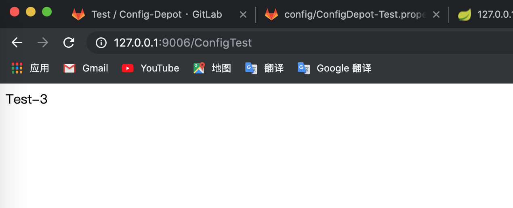

原文连接:https://www.cnblogs.com/bluersw/p/11610719.html
创建客户端项目并读取服务化的配置中心
将配置中心注册到服务中心（Consul）
POM文件添加依赖：
<dependency>
<groupId>org.springframework.boot</groupId>
<artifactId>spring-boot-starter-actuator</artifactId>
</dependency>
<dependency>
<groupId>org.springframework.cloud</groupId>
<artifactId>spring-cloud-starter-consul-discovery</artifactId>
<version>2.1.3.RELEASE</version>
</dependency>配置文件添加内容：
spring.cloud.consul.host=127.0.0.1
spring.cloud.consul.port=8500
#注册到consul的服务名称
spring.cloud.consul.discovery.serviceName=spring-cloud-config启动Consul服务发现：
@SpringBootApplication
//启动配置中心
@EnableConfigServer
//启动服务发现
@EnableDiscoveryClient
public class SpringCloudConfigServerApplication {
public static void main(String[] args) {
SpringApplication.run(SpringCloudConfigServerApplication.class, args);
}
}启动配置中心服务端，并查看Consul后台：
0.png)
注册部署两个配置中心
利用命令后和配置文件参数启动两个配置中心并注册同一个服务名称形成高可用，在spring-cloud-config-server项目根目录下执行:
mvn install将spring-cloud-config-server项目内application.properties文件拷贝到/spring-cloud-config-server/target/目录下两份，并重命名为application-1.properties和application-2.properties，然后修改配置文件内的端口号和应用名称：
server.port=9004
spring.application.name=spring-cloud-config-server-01
server.port=9005
spring.application.name=spring-cloud-config-server-02
在/target/目录下执行以下命令启动两个配置中心：
java -jar spring-cloud-config-server-0.0.1-SNAPSHOT.jar --spring.config.location=application-1.propertiesjava -jar spring-cloud-config-server-0.0.1-SNAPSHOT.jar --spring.config.location=application-2.properties启动配置中心服务端，并查看Consul后台：
1.png)
创建读取配置中心的客户端项目
2.png)
3.png)
4.png)
5.png)
修改配置文件application.properties：
spring.application.name=spring-cloud-config-client
server.port=9006
spring.cloud.consul.host=127.0.0.1
spring.cloud.consul.port=8500
#设置不需要注册到 consul 中
spring.cloud.consul.discovery.register=false
新建配置文件bootstrap.properties：
#配置文件名称中定义的配置项目名称
spring.cloud.config.name=ConfigDepot
#配置文件名称中定义的环境名称
spring.cloud.config.profile=Test
spring.cloud.config.label=master
#开启配置中心的服务发现
spring.cloud.config.discovery.enabled=true
#配置中心注册在服务中心的名字
spring.cloud.config.discovery.serviceId=spring-cloud-config配置中心的内容要求先于application.properties被加载，所以关于配置中心的配置信息要写在bootstrap.properties配置文件中，因为bootstrap.properties配置文件会先于application.properties被加载。
添加读取配置的接口类：
@RestController
public class ConfigTestController {
//配置信息通过@Value注解读取,配置项用${配置项}读取
@Value("${bluersw.config}")
private String configBluersw;
@RequestMapping("/ConfigTest")
public String ConfigTest(){
return this.configBluersw;
}
}启动客户端测试
访问127.0.0.1:9006/ConfigTest，得到配置的信息Test-3(我中间改了几次)：

此时修改Git仓库中配置的内容，再刷新页面，页面的内容是不会改变的，因为配置内容是在程序启动的时候加载，配置中心内容改变是不会自动反映到客户端程序中，但可以通过调用客户端的刷新接口实现重新加载配置内容，这个内容我们放在总线部分演示。
源码
Github仓库:https://github.com/sunweisheng/spring-cloud-example